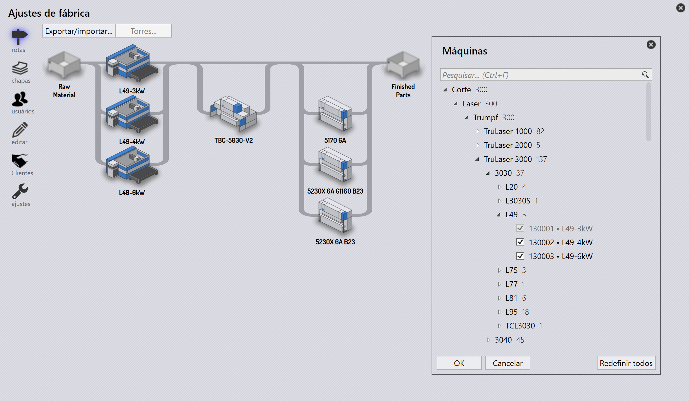

Adicionar/Remover máquina
Use o comando editar para abrir o diálogo de seleção de máquinas. Ele exibe uma lista hierárquica de todas as máquinas de Corte e Dobra juntamente com as seleções atuais.

-
Na visualização em árvore hierárquica, o nome simplificado da máquina é exibido como rótulo da máquina e o nome completo é exibido na dica de ferramenta. A dica de ferramenta da pasta exibe o caminho (Ex: Trumpf • C Series • C60)
-
Um ícone específico da marca é exibido para prensas dobradeiras que não são Trumpf. A dica de ferramenta da máquina também exibe a marca da máquina (Ex - Brand: Bystronic).
-
A caixa de pesquisa pode ser usada para buscar máquinas por Nome, Nome completo, Marca, etc. A seleção de máquinas é mantida durante a pesquisa, permitindo selecionar e pesquisar ao mesmo tempo.
-
A pesquisa também pode ser usada para buscar por tecnologia e tamanho da máquina. Assim, digitar 'fold' na caixa de pesquisa exibe todas as máquinas de dobra (panel bender). Da mesma forma, digitar 10ft exibe todas as prensas dobradeiras com comprimento de mesa de 10ft (isso é sensível à unidade. Use m para metro em unidade métrica). Quando disponível no nome, a contagem de eixos também pode ser usada para pesquisa (Ex: 2A, 5A etc.)
-
O comando Redefinir todos redefine a seleção de máquinas para a configuração de demonstração.